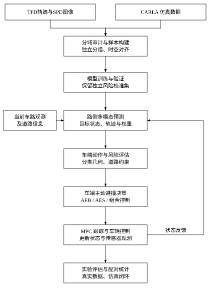
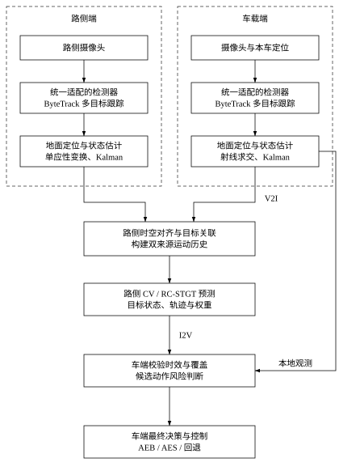
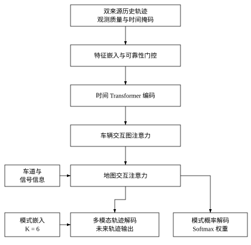
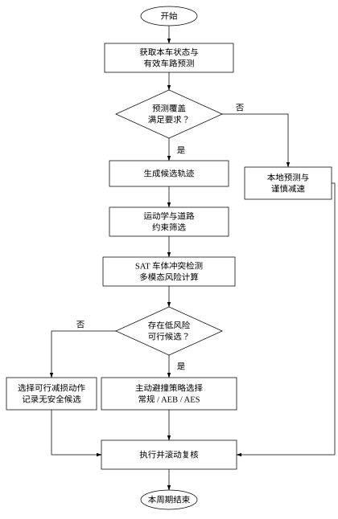
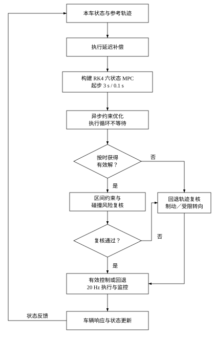
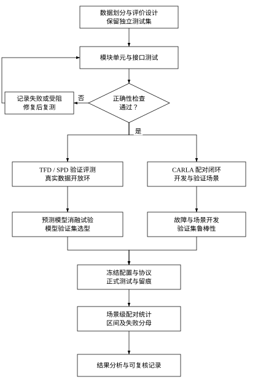

论文黑白流程图
图题与说明位于图外。下载图片仅含流程图本体，可直接插入论文；编号按论文所在章节调整。

公开轨迹和仿真数据经过预处理构建训练样本。冻结预测模型后，系统结合当前观测进行轨迹预测、风险评估和主动避撞，并通过闭环仿真评估。状态反馈只回到在线预测阶段。



车端和路端分别完成目标检测、跟踪及米制状态估计。车端通过V2I上传观测，路侧完成关联与预测后通过I2V下发，最终风险复核和控制由车端完成。失联回退见决策流程。



来源门控融合车端与路端历史，依次编码时间、车辆交互和地图信息。轨迹解码器接收模式嵌入，模式概率分支直接读取融合特征。未来真值仅用于训练损失，未进入该推理结构。



先检查预测信息覆盖，再生成并筛选可执行候选，使用SAT与多模态权重评估冲突。AES仅在侧向通道可观察、道路和动力学约束均可行时参与选择；无低风险候选时执行减损控制。



以六状态自行车模型和RK4离散构建非线性MPC。求解时域3s、步长0.1s，外层10Hz优化，20Hz执行与监控。解需在截止前返回并经过区间复核，否则执行经复核的平稳回退。



先完成模块与接口正确性检查，再分别进行真实轨迹开放环和CARLA闭环评测。配对实验、消融、鲁棒性和泛化结果按场景统计；此流程表示待执行的实验协议。